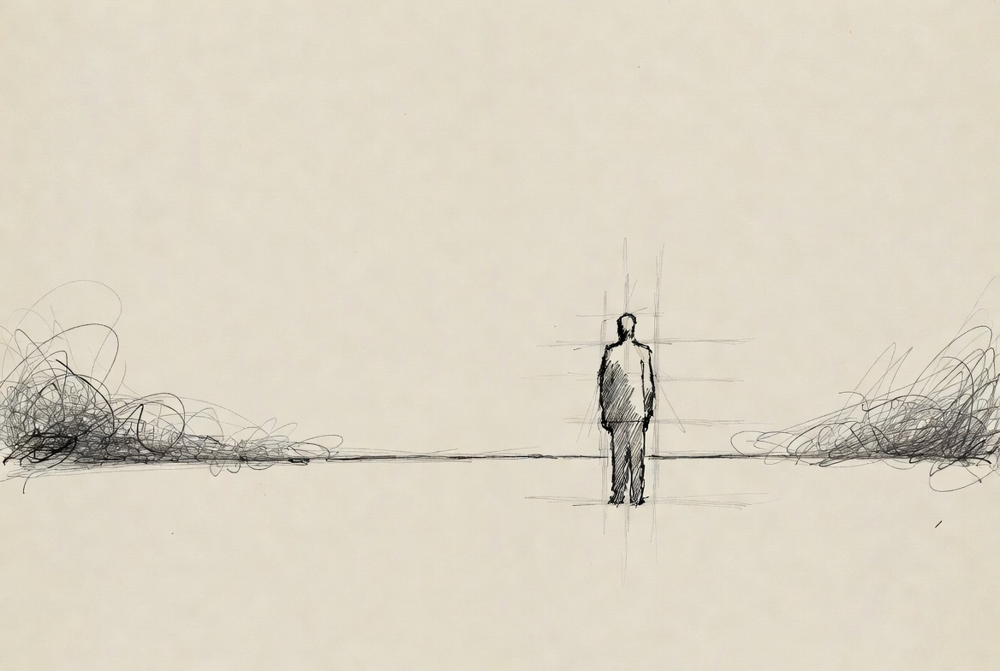

Security.

What we mean by security.
Most security pages explain what an employee can do, what sits in the production database, who has admin access. Ours is shorter, because the architecture has removed those questions before they get asked.
There are no employees with access to your bitcoin. There is no access to give. There is no production database holding anything that could spend your money. The platform never holds your keys, never sees your keys, and has no code path that asks for them.
And we hide none of it. The full design of a Musonius vault is public, down to the exact rules your bitcoin is locked to. A system that is only safe while its design stays secret is not safe; one that stays safe even when it is completely known is. Cryptographers call that Kerckhoffs’s principle, and it is why we can show you everything on this page and invite you to check it yourself.
This page is about what is left to secure once those failure modes are structurally gone. The surfaces that do exist, the protections on each one, and the limits we cannot engineer past. It is also about what happens when you want to leave. The answer is the same: you do not need us.
What protects your bitcoin.
Four different layers answer four different questions: who may authorize a spend, whether each signer can recover, how each signer is protected, and whether the right people can coordinate without depending on Musonius. They support one another, but they are not interchangeable.
Your hardware signing device
Your private key lives inside the secure chip of a hardware device that you physically hold. The key never leaves the chip. Every transaction that moves your bitcoin is approved on the device’s own small screen, with a physical button press. The device shows you the destination address and the amount before you press. Nothing about that approval flows through a screen we control.
Devices can be lost, stolen, or destroyed. Your protection against that is the 12 or 24 words you write down at setup, called the seed phrase. Stored offline somewhere only you can reach, those words let you recreate the same key on a new device. We never see those words. They never touch the internet.
That backup recovers one signing authority; it does not create another one. Every keyholder needs their own tested restore procedure. Multisig cannot compensate for three signers whose backups have never been checked.
If you lose both the device and the seed phrase, you can no longer sign for your vault. Your bitcoin is still safe. Without your signature, only the long failsafe path can move it, and only after the full long wait you set. During that wait, no one can spend your bitcoin. After the wait, your two cosigners recover the vault using Liana and the Sovereignty Backup Kit.
The multisig descriptor
Your vault is a 2-of-3 multisig: two of three keys are required to sign any transaction. On the normal path, as long as you are around and able, your key is always required to be one of them. Your two cosigners, both chosen by you, cannot sign together without you. This is enforced by math, by the Bitcoin network, not by policy or trust. This is self-custody in the strict sense: you, and only you, can move bitcoin out of your vault on the normal path.
You choose your cosigners. Both of your non-owner keys are cosigners: one for the normal spending path, one for inheritance recovery. The normal-path cosigner is often a professional partner: a firm whose business is collaborative security for Bitcoin holders. The inheritance cosigner is usually someone closer to you, but at enough arm’s length from your day-to-day life to be structurally independent: a sibling in another city, an old friend in a different profession, the executor of your estate.
Your two cosigners cannot combine their keys to spend on the normal path. Their combined power only opens after the long failsafe completes, set by you and enforced by the Bitcoin network. A quiet alliance between those two is not a quiet alliance. The failsafe gives you months of warning, not days.
A compromise of any single key is not automatically a loss event. If a support key is compromised, you use your owner key and the other support key to migrate immediately. If your owner device is lost but your seed phrase is safe, you recreate the same owner key and migrate immediately with either support key. If the owner key cannot be recovered, the two support keyholders migrate after the long inactivity wait. Recreating a compromised owner key does not make it safe again; the destination must be a new vault with a new owner key.
Device diversity addresses one narrow risk: the same entropy or firmware failure affecting more than one signer. It does not make complexity free, and two vendor names do not prove every spending path is cross-vendor. Musonius evaluates the actual pair of signers on each path and treats the remaining same-vendor recovery path as a risk that must stay timelocked while the owner is active.
The timelocks
Your vault has two meaningful waiting periods, both written into its rules. After the shorter period, typically three to six months of inactivity, Owner Exit opens: your owner key alone can migrate the funds into a new vault if both support keyholders have disappeared. After the longer period, typically nine to fifteen months of inactivity, Cosigner + Inheritance opens: the two support keyholders can recover without the owner. Owner + Cosigner and Owner + Inheritance remain available throughout. Time adds recovery options; it never removes the normal ones.
Both waits are friction on purpose. Owner Exit protects against the simultaneous loss of both support relationships without turning the owner key into an everyday single point of failure. The longer inheritance wait protects the owner from a quiet alliance between the two support keyholders. The math makes either early spend impossible, and the long windows give legitimate parties time to notice and respond.
Both clocks reset whenever the owner uses the vault. A check-in moves the full balance back into the vault. Paying an invoice or sending bitcoin to another wallet also rebuilds the remaining balance as fresh outputs. In every case, all coins receive fresh locks and both inactivity periods restart. Normal owner activity is the proof of life that keeps the failsafe paths dormant.
If a recovery-path transaction is signed and waiting to broadcast, you can still stop it. Spend the bitcoin yourself on the normal path with your normal-path cosigner before the wait completes. That spend consumes the inputs the recovery-path transaction was going to use, and the recovery-path transaction becomes invalid. The same mechanism works for any pending transaction on a recovery path.
The two waits and the reset together are the architectural answer to the question "how do we resist an attacker who has compromised one party and is waiting patiently?" The timelocks are the safety net under your custody, not a trapdoor under your feet.
Setup day is not the finish line. Keyholders, backups, devices, contact details, and coin ages all change. A maintained vault periodically proves that its signers can recover, its intended paths can sign, and its Sovereignty Backup Kit still reconstructs the vault independently. An unmaintained multisig can be more dangerous than a well-maintained single-sig.
The independence of your keyholders
Three keys held by three structurally separate parties, in three different places, with three different inheritance contexts and incapacity scenarios. The math says 2-of-3. The structure makes it 2-of-3 in practice. A house fire that takes your device does not take your normal-path cosigner’s. A hospital stay that puts you offline does not put your inheritance cosigner offline. The diligence here is on who you choose for each role. We provide the framework; you provide the people. And if you ever choose to move on from Musonius, those same people are the path out. The structure you built is yours, not ours.
What protects the platform.
The platform handles sign-in, session state, signing coordination between you and your keyholders, and the failsafe clock. None of those surfaces touch private keys. All of them still need to be built carefully.
Musonius does not have user accounts in the way most web services do. No usernames. No passwords. No KYC. No identity documents. Your relationship with the platform is your email address, your hardware device, and the keys you control. There is no account database holding personal information for an attacker to steal.
Sign-in is a magic link to your email. No password to phish or reuse. You can also enroll a passkey on your device, which is a credential bound to that device’s hardware and which cannot be phished, reused, or shared.
If you lose access to your email and your passkey, you take your account back by signing a challenge with your hardware device and waiting seven days. During that wait, your previous email address and your inheritance cosigner are notified, so a hijacker cannot do this quietly.
Even if Musonius fails completely, two properties hold up:
- Your recovery path runs through Liana, independent of us. Liana is a Bitcoin wallet built by a different team in a different country. It reads your vault’s description directly and produces transactions any of your keyholders can sign with their hardware device. A platform compromise would be a notification-and-coordination outage. It would not move a satoshi.
- Even a complete platform compromise reveals only watchable information. An attacker who took over the platform tomorrow would learn what your vault looks like, who your keyholders’ email addresses are, and what transactions are mid-flight. They would not learn anything that could move your bitcoin. The signing keys do not live here.
When something fails.
Each failure has a defined response. The available keys determine the path; inactivity determines when the two failsafe paths become available.
| What failed | Available path | Timing | What can be done |
|---|---|---|---|
| Cosigner unavailableLost, unresponsive, or no longer willing | Owner + Inheritance | No waitAvailable immediately | Continue spending or migrate to a replacement vault. |
| Inheritance unavailableLost, unresponsive, or no longer suitable | Owner + Cosigner | No waitAvailable immediately | Continue normal spending and migrate when ready. |
| Both support keyholders unavailableOwner still has one good key | Owner Exit | 3–6 monthsOf inactivity | Owner alone migrates all funds into a new vault. |
| Owner key compromisedDevice lost or the key may be exposed |
Seed phrase available or Restore + support key
Owner key unrecoverableCosigner + Inheritance
|
No waitRestore and migrate immediately 9–15 monthsOf inactivity |
Restore the owner key from the seed phrase, then use either support key to move into a new vault. If the owner key cannot be recovered, the two support keyholders migrate without it after the long wait. |
| Owner unavailableIncapacity or death | Cosigner + Inheritance | 9–15 monthsOf inactivity | Complete the only owner-absent recovery or inheritance spend. |
| Musonius unavailableService outage or company gone | There are no platform keysUse the same key path | UnchangedThe same timing rules apply | Open the Sovereignty Backup Kit in another signing interface and recover with the same keys. |
What Musonius is not.
Musonius is a multisig signing coordinator. It is not a mixer, not a privacy coordinator, and not a service that pools funds from different users together.
Every transaction in a Musonius vault is one owner spending their own bitcoin, signed by their own keys and their own cosigners’ keys. We never combine your transaction with anyone else’s. We never route value between strangers. The platform orchestrates signatures on one owner’s transaction, never funds across many.
The word “coordinator” is shared across many Bitcoin products and means different things in each. Here, it refers to the path a draft transaction takes between you and your cosigners on its way to being fully signed. Nothing about that path moves bitcoin between unrelated parties, and nothing about it tries to obscure where bitcoin came from or where it is going.
What we cannot protect against.
No custody design survives every possible compound failure. The honest question is whether a design makes ordinary single failures survivable. Musonius does. Most ways things can go wrong with one party become a delay, not a loss. A lost device, a deceased cosigner, a coordinator that goes offline: each becomes a wait, not a catastrophe.
The cases the math cannot save you from:
- All three keys lost simultaneously. Nothing survives. The architecture cannot help when nothing remains to sign with. This is the case the Sovereignty Backup Kit, and good operational practice across your keyholders, exists to prevent.
- An attacker who controls two of your three keyholders during a full failsafe window. The whole structure assumes the three keyholders are independent from each other. If that assumption is wrong, the math does not save you. We make the wrong assumption hard by giving you three structurally independent parties. We cannot make it impossible.
We name these on purpose. A security page that lists what it cannot protect against is more useful than one that does not.
A perfect-custody product would either hold your keys for you, which trades self-sovereignty for resilience, or require so many keys and parties that nobody would set it up. The four-path, two-timelock design is the trade-off curve’s sweet spot for the kind of owner Musonius is built for. Enough resilience that ordinary failures do not matter. The owner cryptographically in charge throughout.
Trust in math. Not in people.